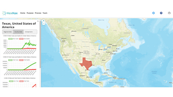
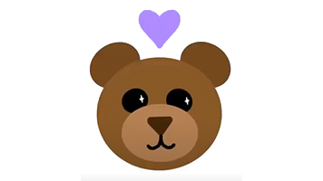
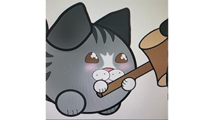

Projects & Laboratories
Core engineering work spanning asynchronous embedded systems, Rust game engines, machine learning, custom PCB fabrication, and computer vision neural networks.
Networking Node Interface on STM32
Async Embassy Framework • Ubuntu Linux • Wokwi Simulation
Implemented a network-communication node intended to communicate with a hub-device with other classmates’ network nodes in an Ubuntu-Linux environment.
- Utilized the Embassy Executor framework to manage asynchronous tasks for receiving, monitoring, and transmitting messages, ensuring non-blocking operation and efficient resource utilization during interrupts.
- Leveraged mutexes for thread-safe access to shared uses, including access to a custom message-building data structure.
- Integrated Manchester encoding, header and trailer encode/decoding (including CRC calculation and verification).
- Implemented custom transmitter and receiver with random-backoff along communication lines as well as a state-observer to detect/avoid data collisions.
- Created asynchronous tests using the
embedded-testRust crate, as well as designing hardware simulations using Wokwi.
Personal Game Project in Bevy and Rust
2D Game Engine • Entity-Component-System • Linux
Interactive 2D video-game using Bevy, a Rust Game Engine, that implements aspects of the Entity-Component-System all in an Ubuntu-Linux environment.
- Implemented player and ball movement systems with collision detection and physics.
- Developed systems for player and ball movements, handling collisions, controls, and interactions.
- Used timers to manage game ticks and ensure smooth gameplay.
- Organized code into modules, systems, and resources for maintainability and readability.
- Leveraged Bevy’s built-in components and resources for rendering and managing game entities.
Random Forest: Board Game Weights
Matching Board Game Weights to Player Preferences
Analyzed the relationship between board game weight and data points from the Board Game Geek dataset, including predetermined complexity, rating, player count, ownership, and theme.
- Related game weight to cognitive load, as well as relating the age of a board game to its unique complexity.
- Performed feature analysis on attributes to the independent variable to determine their importance in determining game weight.
- Determined statistical significance through Linear Regression and Kruskal-Wallis tests.
WiFi Clock - Custom Embedded PCB
Custom Hardware Fabrication • Arduino C • Onshape
Designed and developed a printed circuit board (PCB) schematic using KiCad, ensuring precise layout and functionality for electronic systems, including routing, tracing, and handling attenuation.
- Manually placed and soldered individual components onto the fabricated PCB.
- Configured the clock with custom embedded code in Arduino C, emulating the ESP32 communications protocol, including WiFi connectivity, polling weather data, and displaying custom messages.
- Created a 3D model in Onshape for the clock’s frame and custom buttons.
Underwater Sonar Classification CNN
MATLAB Deep Learning Toolbox • 7,600 Image Dataset
Developed a Convolutional Neural Network (CNN) model based on YOLOv4 architecture for underwater object detection and classification using MATLAB Deep Learning Toolbox and Computer Vision Toolbox, achieving high accuracy and precision.
- Utilized data preprocessing techniques including data cleansing on a dataset of 7,600 black and white sonar images using geometric transformations, logarithmic compression, and denoising encoding.
- Collaborated with a team to develop a unique approach for processing multibeam sonar images using deep learning techniques, resulting in a model capable of detecting and classifying objects with high accuracy in underwater environments.
Competitions, Hackathons & Additional Work
Award-winning hackathon builds, research grant projects, and distributed mesh networks.

AID PACT: AI Pandemic Prediction
Bayesian Ridge Regression • Socioeconomic Data
Interactive predictive map forecasting case spread and unemployment rates over time to assist global health resource logistics.
- Integrated Earth Observation satellite features with Gini coefficient, GDP, and population density metrics.
- Built the interactive visualization layer integrated directly with Google Maps API.

BayHax: Emotional Health Bear
IoT Telemetry • Interactive Dashboard
Award-winning smart companion bear fitted with Raspberry Pi, sensors, and audio feedback to help track children’s emotional patterns.
- Built data communication infrastructure between the physical device and web dashboard.
- Implemented dynamic timeseries visualization using Chart.js to cross-reference emotional states with physical interactions.

Borb’s Big Adventure
Kinematics Simulation • 2D Physics Game
Educational reflexive-response game designed to teach children kinematic principles and momentum.
- Developed grappling hook movement mechanics simulating realistic rope tension and centripetal forces.
- Won 2020 WiSys Quick Pitch competition at UW-Stevens Point, securing a grant for further research and development.
Tennis Scoreboard Mesh
Painless Mesh • Local Asynchronous Web Server
Interconnected 7 ESP32 microcontrollers over an ad-hoc painless mesh network for real-time court state synchronization.
- Kept persistent match history and state on SPIFFS flash memory across power loss.
- Hosted asynchronous HTTP web portals on ESP32 microcontrollers supporting live updates via GET and POST requests.